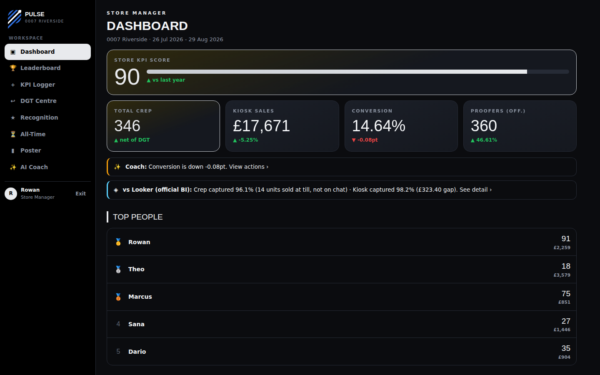
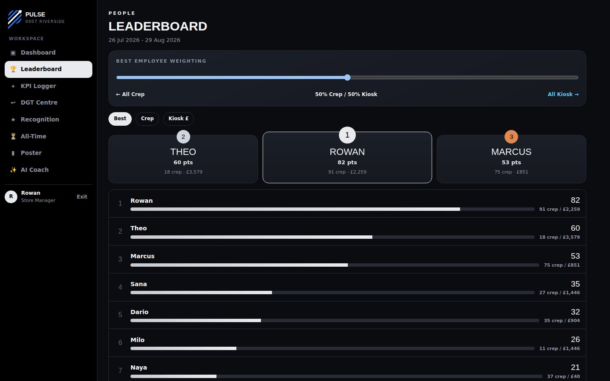
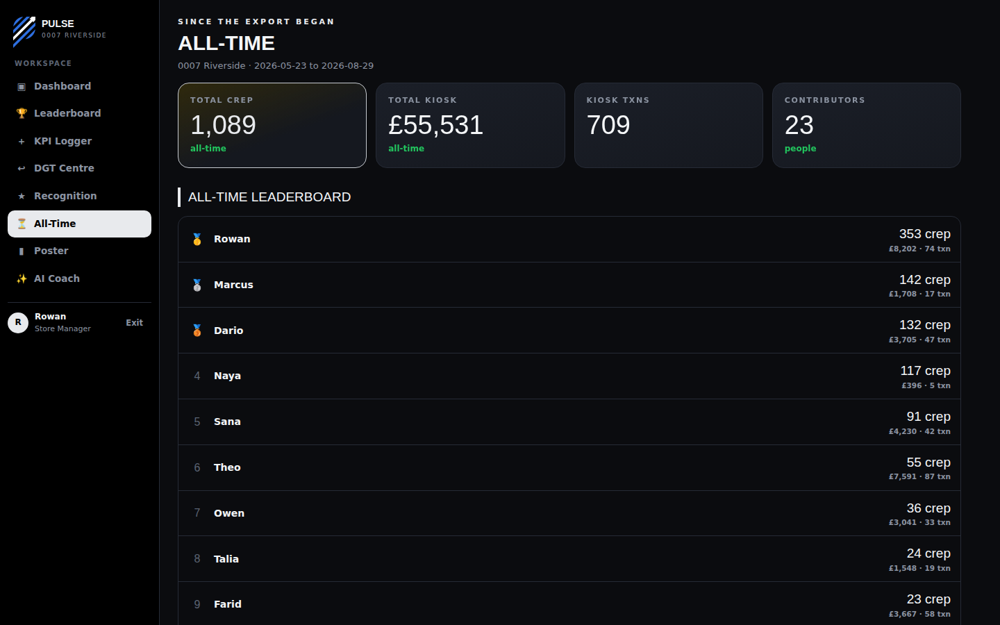
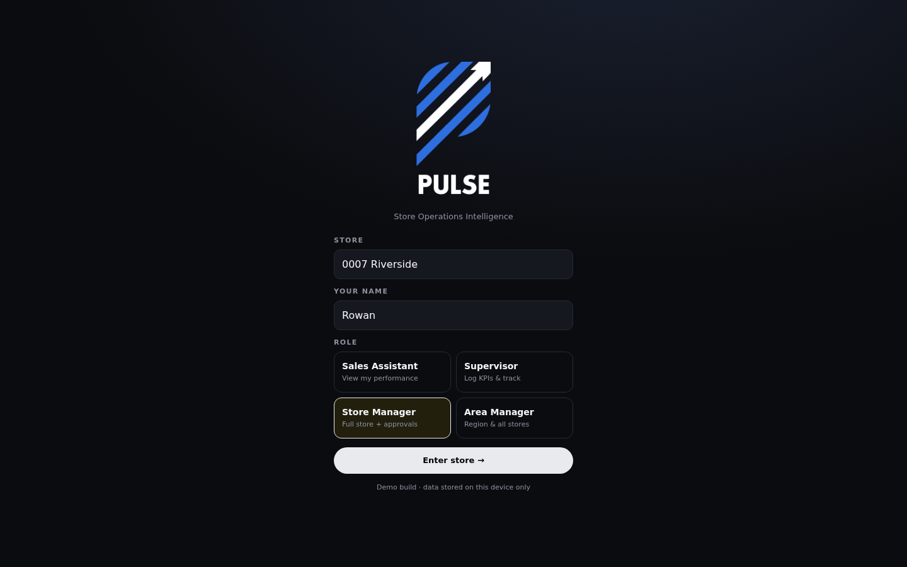
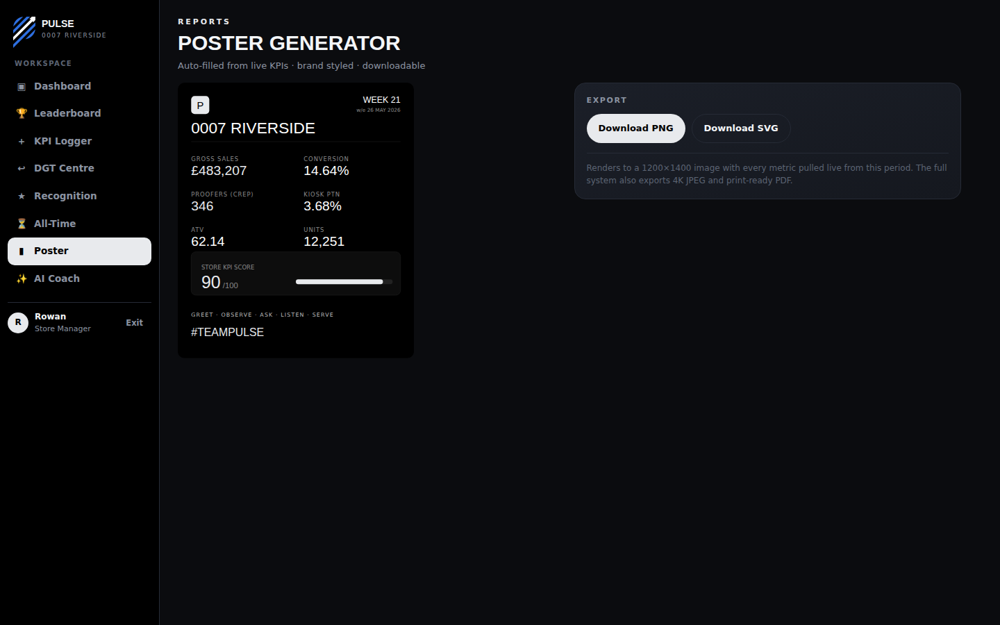

Store-level BI tools tell a regional director what a store sold. They were never built to tell a store who quietly sold it, week after week, without anyone above them noticing. Pulse reads the informal WhatsApp updates a retail team was already sending each other and turns them into a validated, real-time leaderboard, built specifically to surface the strongest individual performers, not just the loudest ones, and to make the whole team compete for it.
Official back-office BI reports at store level: total sales, footfall, conversion, all rolled up for a regional director to skim once a week. It's genuinely useful for that. What it was never built to do is tell you which individual colleague on the floor is quietly outperforming everyone else, shift after shift, without ever being the one who gets mentioned in a review.
In practice, the attention of a busy management hierarchy gravitates toward whoever is most visible day to day, the confident talker, the longest-serving face, not necessarily whoever is actually closing the most sales. The genuinely strong performers are often the underdogs: quieter colleagues, newer starters, people covering the quiet Tuesday shift, whose numbers were never tracked individually in the first place, so there was nothing to notice them by.
The store already tracked two KPIs that mattered every single day: protection-plan attach units sold, and the value going through the in-store kiosk service. But the only place any of it actually got recorded was a WhatsApp group: colleagues typing things like "Rowan 1x attach" or "Marcus £40 kiosk" between customers. The numbers existed. Nobody could see them.
Rather than asking a busy retail team to change how they communicate, Pulse meets the chat exactly as it is. The engine reads every message, resolves who's being credited even through nicknames and typos, and reconstructs a clean, auditable dataset, without anyone changing a single habit.
Once the data is clean, it powers a real product: a live dashboard, a weighted leaderboard the team can tune themselves, cumulative all-time standings, a recognition feed, an AI coach that surfaces patterns worth acting on, and a one-tap branded poster generator for the staff room wall. The leaderboard is the point: making individual performance visible to the whole team, not just to management, is what turns a reporting tool into something colleagues actually check and compete over.



The internal version of this tool was styled for its host retailer. For this case study, it was rebuilt end-to-end as an independent product: new name, new mark, new colour system, new typography, with every screen re-themed and re-tested rather than just re-skinned.


A tool like this is only worth anything if the numbers hold up against the official back-office figures the business already trusted. Pulse was checked directly against that official reporting, message by message, period after period. This was never a one-off spot-check.
Every gap between the chat-derived total and the official figure was investigated individually, not shrugged off. The goal was always to know exactly why a number was off, whether that was an unlogged sale, a genuinely quiet trading day, or a parsing edge case worth fixing.
A leaderboard sounds like a small addition to a KPI tracker. In practice it changes the whole dynamic on the floor. The moment individual numbers are visible to colleagues, not just to a manager reading a monthly report, people start competing with each other directly. That's a far more immediate motivator than a figure that only gets discussed once a month in a back office, and it works in both directions: it gives quiet high performers visible proof of what they're already doing well, and it gives everyone else a clear, live target to chase.
This is a genuine, recurring gap in retail KPI tooling generally, not something specific to one store. The category is built top-down: dashboards for regional directors, aggregate figures for finance, reporting cadences measured in weeks. Almost none of it is built bottom-up, for the person actually on the shop floor who wants to know where they stand today, against their own team, right now. Individual-level recognition and peer-visible competition should be a base feature of retail KPI tracking software, not something a store has to improvise on WhatsApp because the tool head office pays for was never designed to notice them.
Identified a real, unglamorous operational gap and built the full stack to close it: data engineering, UX, and a product people actually opened every day, not just a mockup.
The engine adapts to the team's existing shorthand instead of asking them to adopt new habits, which is the harder, more valuable design decision.
Built to be checked against official numbers, not just demoed. Every discrepancy was traced to a specific cause rather than accepted as noise.
Took a functional internal tool and developed it into a standalone identity: naming, mark, colour system, and typography, for honest portfolio presentation.